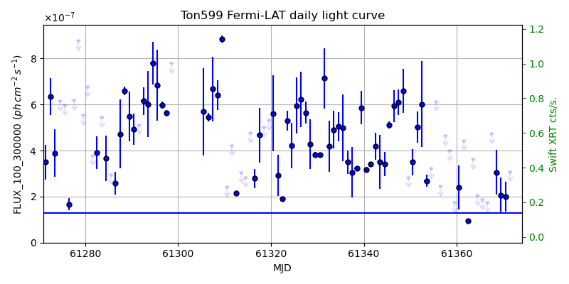
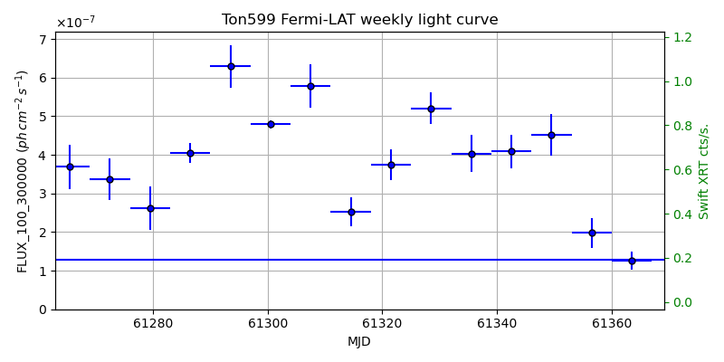
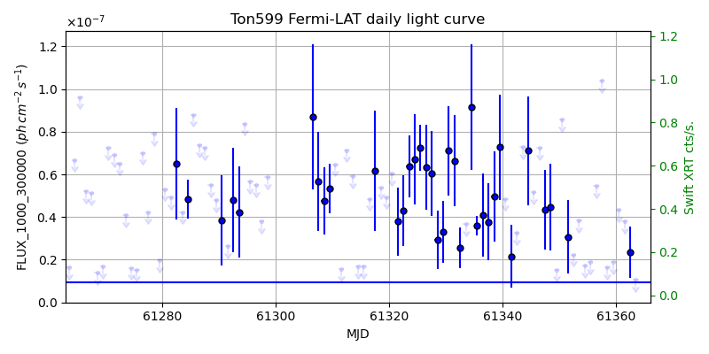
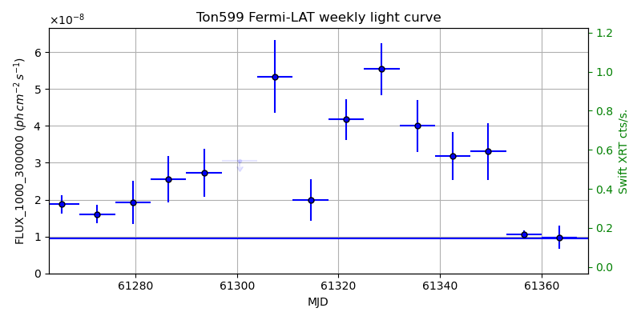

LAT Lightcurve site: https://fermi.gsfc.nasa.gov/ssc/data/access/lat/msl_lc/source/Ton_599
Swift site: https://www.swift.psu.edu/monitoring/source.php?source=1156+295
NED: Query
Time of last update of this page: UT: 2026-11-28 16:23 (MJD: 61372.683)
| Property | Value |
|---|---|
| R.A. | 11:59:31.92 |
| Dec. | 29:14:45.6 |
| z | 0.725 |
| 3FGL SpectrumType | LogParabola |
| 3FGL PL Index | |
| 3FGL Flux_100_300000 | 1.27e-07 1 / (s cm2) |
| 3FGL Flux_1000_300000 | 9.48e-09 1 / (s cm2) |
| 3FGL Flux >200 GeV | 6.90e-12 1 / (s cm2) |
| 3FGL Extrap. Crab >200 GeV | 0.03 |
| 3FGL Flux After EBL Absorption >200GeV | 4.08e-13 1 / (s cm2) |
| 3FGL EBL Crab Fraction >200GeV | 0.00 |

| MJD | dMJD | Flux | dFlux | Frac3FGL | FracCrab>200GeV | EBLFracCrab>200GeV |
|---|---|---|---|---|---|---|
| 61367.50 | 0.50 | 4.75e-07 | 0.00e+00 | 0.00 | 0.00 | 0.00 |
| 61368.50 | 0.50 | 3.05e-07 | 9.79e-08 | 2.40 | 0.07 | 0.00 |
| 61369.50 | 0.50 | 2.05e-07 | 7.82e-08 | 1.61 | 0.05 | 0.00 |
| 61370.50 | 0.50 | 1.99e-07 | 6.41e-08 | 1.57 | 0.05 | 0.00 |
| 61371.50 | 0.50 | 3.09e-07 | 0.00e+00 | 0.00 | 0.00 | 0.00 |

| MJD | dMJD | Flux | dFlux | Frac3FGL | FracCrab>200GeV | EBLFracCrab>200GeV |
|---|---|---|---|---|---|---|
| 61335.50 | 3.50 | 4.03e-07 | 4.78e-08 | 3.16 | 0.09 | 0.01 |
| 61342.50 | 3.50 | 4.09e-07 | 4.32e-08 | 3.21 | 0.09 | 0.01 |
| 61349.50 | 3.50 | 4.51e-07 | 5.34e-08 | 3.54 | 0.10 | 0.01 |
| 61356.50 | 3.50 | 1.98e-07 | 3.87e-08 | 1.55 | 0.05 | 0.00 |
| 61363.50 | 3.50 | 1.26e-07 | 2.34e-08 | 0.99 | 0.03 | 0.00 |

| MJD | dMJD | Flux | dFlux | Frac3FGL | FracCrab>200GeV | EBLFracCrab>200GeV |
|---|---|---|---|---|---|---|
| 61367.50 | 0.50 | 8.71e-09 | 0.00e+00 | 0.00 | 0.00 | 0.00 |
| 61368.50 | 0.50 | 3.19e-08 | 0.00e+00 | 0.00 | 0.00 | 0.00 |
| 61369.50 | 0.50 | 4.79e-08 | 0.00e+00 | 0.00 | 0.00 | 0.00 |
| 61370.50 | 0.50 | 3.15e-08 | 0.00e+00 | 0.00 | 0.00 | 0.00 |
| 61371.50 | 0.50 | 2.66e-08 | 0.00e+00 | 0.00 | 0.00 | 0.00 |

| MJD | dMJD | Flux | dFlux | Frac3FGL | FracCrab>200GeV | EBLFracCrab>200GeV |
|---|---|---|---|---|---|---|
| 61335.50 | 3.50 | 4.00e-08 | 7.07e-09 | 4.22 | 0.12 | 0.01 |
| 61342.50 | 3.50 | 3.19e-08 | 6.48e-09 | 3.36 | 0.10 | 0.01 |
| 61349.50 | 3.50 | 3.30e-08 | 7.61e-09 | 3.48 | 0.10 | 0.01 |
| 61356.50 | 3.50 | 1.05e-08 | 1.24e-09 | 1.10 | 0.03 | 0.00 |
| 61363.50 | 3.50 | 9.74e-09 | 3.15e-09 | 1.03 | 0.03 | 0.00 |
--------------------------------------------------------- Using user-supplied coords: 11:59:31.92 29:14:45.6 2000 --------------------------------------------------------- FLWO UT night of: 2026-11-29 Local Sid. @ Midnight: 04:08 Sunset (-15.0) (local, UT): 18:31 01:31 Sunrise (-15.0) (local, UT): 05:53 12:53 Moonrise (local, UT): 21:57 04:57 Moonset (local, UT): Moon phase: 0.72 --------------------------------------------------------- AzTime LSID UT Obj_el Obj_az Mn_el Mn_az Sep. --------------------------------------------------------- 18:31 22:39 01:31 -26.2 340.2 -32.9 32.1 45.2 19:01 23:09 02:01 -28.0 347.3 -29.4 38.9 44.9 19:31 23:39 02:31 -29.0 354.6 -25.4 45.0 44.6 20:01 00:09 03:01 -29.2 2.2 -21.0 50.6 44.3 20:31 00:39 03:31 -28.5 9.6 -16.2 55.6 44.0 21:01 01:09 04:01 -27.1 16.9 -11.1 60.2 43.7 21:31 01:39 04:31 -24.8 23.7 -5.4 64.5 43.5 22:01 02:09 05:01 -21.9 30.2 0.4 68.5 43.2 22:31 02:39 05:31 -18.4 36.1 5.8 72.2 43.0 23:01 03:10 06:01 -14.4 41.5 11.6 75.8 42.8 23:31 03:40 06:31 -10.0 46.5 17.5 79.4 42.5 00:01 04:10 07:01 -4.7 51.0 23.6 82.9 42.3 00:31 04:40 07:31 0.4 55.1 29.7 86.5 42.1 01:01 05:10 08:01 5.5 58.9 35.8 90.3 42.0 01:31 05:40 08:31 11.0 62.4 42.0 94.4 41.8 02:01 06:10 09:01 16.7 65.7 48.1 99.1 41.7 02:31 06:40 09:31 22.6 68.8 54.2 104.7 41.5 03:01 07:10 10:01 28.6 71.7 60.1 111.7 41.4 03:31 07:40 10:31 34.7 74.5 65.6 121.1 41.3 04:01 08:10 11:01 40.9 77.2 70.5 134.7 41.2 04:31 08:40 11:31 47.2 79.9 74.0 154.7 41.1 05:01 09:11 12:01 53.5 82.7 75.2 181.1 40.9 05:31 09:41 12:31 59.9 85.7 73.6 206.8 40.8 05:53 10:02 12:53 64.5 88.1 71.0 221.2 40.8 --------------------------------------------------------- Dark hours >55 deg.: 0.00